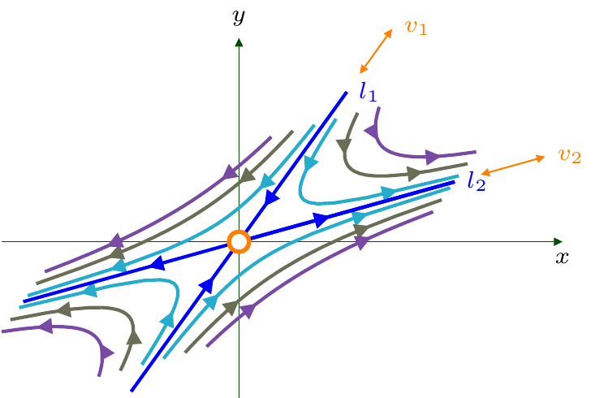
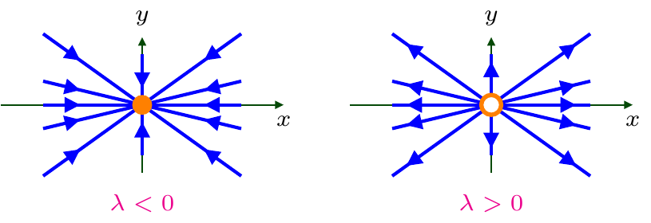
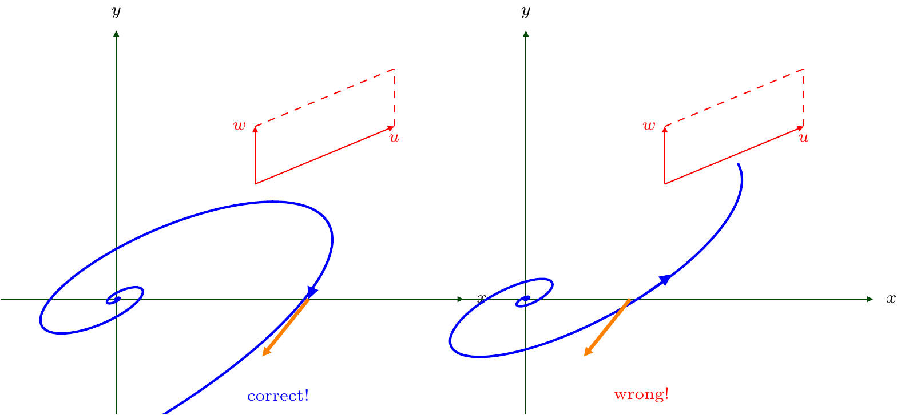

6 Linear systems
6.1 Preliminaries
- Consider (5.1) with linear \(f\) and \(g\):
\[ \begin{cases} x'=ax+by,\\ y'=cx+dy. \end{cases} \tag{6.1}\]
Here \(a,b,c,d\in{\mathbb{R}}\) are some real numbers.
- Consider the matrix \(A\) associated with the system (6.1):
\[ A=\begin{pmatrix}a&b\\c&d\end{pmatrix}. \tag{6.2}\]
- Then, using the column vector notation \((x,y)^T:=\begin{pmatrix}x\\y\end{pmatrix}\in{\mathbb{R}}^2\) and coordinate-wise differentiation: \[ \begin{pmatrix}x\\y\end{pmatrix}':=\begin{pmatrix}x'\\y'\end{pmatrix}, \] one can rewrite (6.1) as follows:
\[ \begin{pmatrix}x\\y\end{pmatrix}'=A\begin{pmatrix}x\\y\end{pmatrix}. \tag{6.3}\]
- A fixed point of (6.1) is, hence, a solution to the linear (algebraic) system
\[ \begin{cases} ax+by=0,\\ cx+dy=0. \end{cases} \tag{6.4}\]
Therefore, the origin \((0,0)\) is always a fixed point of the linear system (6.1).
The origin is the unique fixed point of the linear system (6.1) if and only if
\[ \det A:=\biggl\lvert \begin{matrix}a&b\\c&d\end{matrix}\biggr\rvert:=ad-bc\neq0. \]
- If, however, \(\det A=0\), then both equations in (6.4) determine the same line on the phase plane. All points of this line are then fixed points of (6.1). We will discuss this case later on. Until that, we will always assume below that
\[ {\det A \neq0.} \tag{6.5}\]
Recall that a number \(\lambda\in{\mathbb{C}}\) is said to be an eigenvalue of a matrix (6.2), if there exists an eigenvector \(v=(v_1,v_2)^T\in{\mathbb{C}}^2\), \(v\neq (0,0)^T\), such that \(Av=\lambda v\).
Recall that if \(v\in{\mathbb{C}}^2\) is an eigenvector of a matrix \(A\) corresponding to a fixed eigenvalue \(\lambda\in{\mathbb{C}}\), then, for any \(p\in{\mathbb{C}}\), \(p v\in{\mathbb{C}}^2\) is also an eigenvector of \(A\) corresponding to the eigenvalue \(\lambda\).
Eigenvalues \(\lambda_1,\lambda_2\in{\mathbb{C}}\) of a matrix \(A=\begin{pmatrix}a&b\\c&d\end{pmatrix}\) are solutions to the following characteristic equation of (6.1):
\[ \begin{gathered} \biggl\lvert\begin{matrix}a-\lambda & b\\c&d-\lambda\end{matrix}\biggr\rvert=0, \quad \text{i.e.} \\ \lambda^2-(a+d)\lambda+(ad-bc)=0. \end{gathered} \tag{6.6}\]
Using the notation \(\mathrm{tr} A:=a+d\) for the trace of \(A\), one can rewrite (6.6) \[ \lambda^2-( \mathrm{tr} A) \lambda+\det A=0. \]
By Vieta’s formulas, \(\lambda_1 \cdot \lambda_2 =\det A\). Therefore, the condition (6.5) means that
\[ {\lambda_1\neq0, \qquad \lambda_2\neq0.} \tag{6.7}\]
- The characteristic equation (6.6) has real or complex roots depending on the value of its discriminant \(\Delta:=( \mathrm{tr} A)^2-4\det A\).
6.2 : Real {different} eigenvalues (\(\Delta>0\))
In the case \(\Delta>0\), the characteristic equation (6.6) has two different real eigenvalues \(\lambda_1,\lambda_2\in{\mathbb{R}}, \ \lambda_1\neq\lambda_2\).
Then the corresponding eigenvectors are also real: \(v_1,v_2\in{\mathbb{R}}^2\).
The general solution to the linear system (6.1) is then given by
\[ {\bigl(x(t),y(t)\bigr)^T=C_1e^{\lambda_1 t}v_1+C_2e^{\lambda_2 t} v_2, } \]
where \(C_1,C_2\in{\mathbb{R}}\) are arbitrary constant. Or, component-wise, if \(v_1=(v_{11},v_{12})^T\) and \(v_2=(v_{21},v_{22})^T\), then
\[ \begin{aligned} x(t)=C_1v_{11}e^{\lambda_1 t}+C_2v_{12}e^{\lambda_2 t},\\ y(t)=C_1v_{21}e^{\lambda_1 t}+C_2v_{22}e^{\lambda_2 t}, \end{aligned} \tag{6.8}\]
(stress that \(C_1,C_2\) are the same in the expressions for \(x(t)\) and \(y(t)\)).
- Each initial point \[ (x_0,y_0)=(x(t_0),y(t_0))\in{\mathbb{R}}^2 \] determines only one pair \(C_1,C_2\in{\mathbb{R}}\) if we take \(t=t_0\) in system (6.8), since eigenvectors \(v_1\) and \(v_2\) are linearly independent.
6.3 : Negative {different} eigenvalues
- If \(\lambda_1<0\), \(\lambda_2<0\), \(\lambda_1\neq\lambda_2\), then
\[ {x(t)\to0, \quad y(t)\to0,\quad \text{as }t\to+\infty.} \tag{6.9}\]
In this case, the fixed point \((x_*,y_*)=(0,0)\) is called a stable node (a.k.a. sink or attractor).
It is also said, that \((0,0)\) is then a globally asymptotically stable fixed point or a global attractor, where “global(ly)” is to stress that (6.9) holds regardless how far was initially \((x(t_0),y(t_0))\) from \((0,0)\).
Hence the trajectories of (6.1) tend then to the origin, but do not contain it (as it is a fixed point).
Let e.g. \(|\lambda_1|>|\lambda_2|\), i.e. \(0>\lambda_2>\lambda_1\), then the phase portrait of (6.1) is as follows:
The phase portrait should show:
The fixed point (the origin) is a trajectory (orange dot).
The arrows on the trajectories are directed towards the origin.
The only straight trajectories lie on lines \(l_1\), \(l_2\) parallel to eigenvectors \(v_1\), \(v_2\), respectively, which pass through the origin. (Stress that there are four such trajectories, not two!)
All other trajectories are branches of skewed parabola-like curves. (Imagine that the “parabolas” are sketched in the skewed coordinate plane with axes \(l_1\) and \(l_2\).)
The line \(l_2\) (``slow line’’), which corresponds to the eigenvalue \(\lambda_2\) with smaller absolute value, is the tangent line to the all “parabolas” (with the tangent point at the origin).
The line \(l_1\) (``fast line’’), which corresponds to the eigenvalue \(\lambda_1\) with larger absolute value is the “axis” for the all “parabolas”. (Note that, however, the “parabolas” are not symmetric with respect to \(l_1\).)
Stress that each such “parabola” consists of two disjoint trajectories.
6.4 : Positive {different} eigenvalues
If \(\lambda_1>0\), \(\lambda_2>0\), \(\lambda_1\neq\lambda_2\), then both \(x(t)\) and \(y(t)\) converge to \(\infty\) (\(+\infty\) or \(-\infty\)) as \(t\to+\infty\).
In this case, the fixed point \((x_*,y_*)=(0,0)\) is called an unstable node (a.k.a. source or repeller).
The trajectories tend then outwards the origin and towards the infinity. The trajectories may start at some \((x_0,y_0)\) quite far from the origin, but we will always draw them starting close to the origin.
The scheme of how to make the phase portrait is the same as for the stable node (stress that now \(|\lambda_1|>|\lambda_2|\) implies \(\lambda_1>\lambda_2>0\)), with the only crucial difference that the arrows on the trajectories are directed outwards the origin.
6.5 : Eigenvalues with {opposite} signs
Suppose that \(\lambda_2>0>\lambda_1\).
Then \((x_*,y_*)=(0,0)\) is an unstable fixed point which is called the saddle point.
The phase portrait looks as follows:

The only straight trajectories lie on lines \(l_1\), corresponding to \(\lambda_1{\color{RedViolet}<}0\) (stable manifold), and \(l_2\), corresponding to \(\lambda_2{\color{RedViolet}>}0\) (unstable manifold).
All other trajectories are branches of skewed hyperbola-like curves.
The arrows on the trajectories are towards the origin while the motion is “along” the line \(l_1\), whereas the arrows are outwards the origin, when the motion is “along” the line \(l_2\).
Unless the initial condition lies on \(l_1\), both \(x(t),y(t)\) converge to \(\pm\infty\) as \(t\to\infty\).
6.6 : Real {equal} eigenvalues (\(\Delta=0\))
Suppose that \(\lambda_1=\lambda_2:=\lambda {\color{RedViolet}\neq 0}\). Then there possible two sub-cases:
Matrix \(A\) is diagonal: \(A=\begin{pmatrix}\lambda&0\\0&\lambda\end{pmatrix}\).
Then (6.1) is split by two independent identical equations: \(x'=\lambda x\), \(y'=\lambda y\).
All trajectories then lie on straight lines which pass through the origin.
The arrows are directed towards the origin if \(\lambda<0\), and outwards the origin if \(\lambda>0\).
The fixed point (at the origin) is called then a (stable or unstable) star or star node.

Matrix \(A\) is not diagonal. Then
There is a unique eigenvector \(v\in{\mathbb{R}}^2\) corresponding to \(\lambda\).
The general solution to (6.1) is
\[ {\bigl(x(t),y(t)\bigr)^T=(C_1 +C_2 t)e^{\lambda t}v.} \]
All the trajectories lie on `cubic parabola’-like curves, with the tangent line parallel to \(v\).
The arrows are directed towards the origin if \(\lambda<0\), and outwards the origin if \(\lambda>0\).
The fixed point (at the origin) is called then a (stable or unstable) degenerate node.
6.7 Remark
To choose, whether the `cubic parabola’ is like \(y=x^3\) or \(y=-x^3\), one can use tangent vectors from the direction field.
6.8 : Complex eigenvalues (\(\Delta<0\))
- Let \(\Delta<0\), i.e. the characteristic equation (6.6) has two complex roots
\[ {\lambda_1=\alpha+i \beta, \quad \lambda_2=\alpha- i \beta,} \] where \(\alpha,\beta\in{\mathbb{R}}\), and \(\beta\neq0\).
- The corresponding eigenvectors are also complex (from \({\mathbb{C}}^2\)) and conjugate:
\[ v_1=u+i w, \quad v_2=u-i w, \]
where \(u,w\in{\mathbb{R}}^2\) are real vectors.
- The general solution to (6.1) is then
\[ \begin{aligned} (x(t),&y(t))^T=C_1 \mathrm{Re} \bigl(e^{\lambda_1 t}v_1\bigr)+C_2 \mathrm{Im} \bigl(e^{\lambda_1 t}v_1\bigr) \\ &{% \begin{aligned} &= C_1 e^{\alpha t} \bigl(\cos(\beta t) u-\sin(\beta t)w\bigr)\\ &\qquad +C_2 e^{\alpha t}\bigl(\sin(\beta t) u+\cos(\beta t)w\bigr) \end{aligned}% }% \\ &{% \begin{aligned} &= e^{\alpha t}\bigl( C_1 \cos(\beta t) +C_2 \sin(\beta t)\bigr) u\\ &\quad +e^{\alpha t}\bigl( C_2 \cos(\beta t)-C_1 \sin(\beta t)\bigr) w. \end{aligned}% }% \end{aligned} \]
where \(C_1,C_2\in{\color{RedViolet}\mathbb{R}}\) are arbitrary (real!) constants.
- Again, each initial point \((x(t_0),y(t_0))\in{\mathbb{R}}^2\) determines only one pair \(C_1,C_2\in{\mathbb{R}}\) if we set \(t=t_0\) above.
6.9 : Non-zero real part (\(\alpha\neq0\))
Each trajectory (except the fixed point at the origin itself) is a spiral around the origin.
The arrows on the spiral are directed towards the origin if \(\color{RedViolet}\alpha<0\) and outwards the origin if \(\color{RedViolet}\alpha>0\). The fixed point \((x_*,y_*)=(0,0)\) is called then stable spiral (a.k.a. spiral sink) or unstable spiral (a.k.a. spiral source), respectively.
The phase portrait should contain only one trajectory, i.e. one spiral (to do not create a mess).
To sketch the spiral properly, we need to know its slope (how it is “slanting”) and also to determine the rotation of the spiral: whether it is clockwise or counter-clockwise.
To determine the slope of the spiral , one can consider the parallelogram formed by vectors \(u\) and \(w\).
Stress, however, that \(u\) and \(w\) are not determined uniquely (even up to a factor).
To determine whether the rotation of the spiral is clockwise or counter-clockwise, it is enough to find even one vector of the direction field, and “agreed” its direction with the direction of arrows on the spiral. Consider an example.
6.10 Example
Consider the dynamical system \[ \begin{cases} x'=-2x+6y\\y'=-3x+4y. \end{cases} \] The corresponding matrix is \(A=\begin{pmatrix}-2&6\\-3&4\end{pmatrix}\), hence the characteristic equation is \[ \biggl\lvert\begin{matrix}-2-\lambda&6\\-3&4-\lambda\end{matrix}\biggr\rvert=0, \] that yields \[ \begin{gathered} \lambda^2-2\lambda+10=0,\\ \lambda_1=1+3i, \quad \lambda_2=1-3i,\\ \alpha=1>0, \qquad \beta=3. \end{gathered}\]
Since \(\alpha=1>0\), the origin is an unstable spiral; and the arrows along the trajectory should be directed outwards the origin.
Find e.g. eigenvector \(v_1=(p,q)^T\in {\mathbb{C}}^2\) \[ \begin{gathered} Av_1=\lambda_1 v_1, \\ (-2p+6q,-3p+4q)^T=\lambda_1(p,q)^T, \end{gathered} \] Stress that since the eigenvector can be found up to a factor before it only, it is enough to compare first coordinates here: \[ -2p+6q = (1+3i)p \Longrightarrow 2q = (1+i)p. \] We choose now a “convenient” value of \(p\), e.g. \(p=2\). Then \(q=1+i\). Hence \(v_1=(2,1+i)^T\) is an eigenvector, i.e. \[ \begin{gathered} v_1=(2,1)^T + i(0,1)^T,\\ u=(2,1)^T, \quad w=(0,1)^T. \end{gathered} \]
Despite non-uniqueness of the choice for \(u,w\), one gets the slope of the spiral. But, which rotation is correct?
Consider a direction vector: take, for example, \(x=1\), \(y=0\), then \(x'=-2\), \(y'=-3\). The vector \(n=(-2,-3)^T\) is, of course, just the first column of the matrix \(A\).
Recall that each initial condition, e.g. each point on \(x\)-axis, will have own trajectory, i.e. an own spiral. All spirals have the same rotation rule (clockwise or counter-clockwise). Assume that we have the sketch of the spiral which passes through the considered point \((1,0)\). Recall that since we got \(\alpha=1>0\), the arrows on the spiral are directed outwards the origin. And the arrows at \((1,0)\) on the spiral and of the direction vector must be the same. Hence, only the first graph is correct.

6.11 : Zero real part (\(\alpha=0\))
Consider now the case when \(\lambda_1=\beta i\), \(\lambda_2=-\beta i\).
Note that the characteristic equation (6.6) takes then the form \(\lambda^2+\beta^2=0\).
This is possible hence if and only if $ A=0$, i.e. \(a=-d\).
The general solution to (6.1) then is: \[ \begin{aligned} (x(t),y(t))^T &= \bigl( C_1 \cos(\beta t) +C_2 \sin(\beta t)\bigr) u\\ &\quad +\bigl( C_2 \cos(\beta t)-C_1 \sin(\beta t)\bigr) w. \end{aligned}, \] hence both \(x(t)\) and \(y(t)\) are periodic functions. In particular, they do not have any limits (finite nor infinite) when \(t\to\infty\).
The trajectories of (6.1) are then ellipses.
The fixed point \((x_*,y_*)=(0,0)\) is called then the centre.
The arrows on the trajectories can be determined by a direction vector. Recall that the direction vector should be also tangent to the trajectories.
In the following sketch, \(a>0,c>0\) (the first column of matrix \(A\)).
6.12 Remark
Note that a centre is actually not stable nor unstable fixed point.
More precisely, it is Lyapunov stable (stable in the sense of Lyapunov): namely, for any \(\varepsilon>0\) there exists \(\delta>0\) such that if the (Euclidean) distance between \((x(0),y(0))\) and \((x_*,y_*)=(0,0)\) is less than \(\delta\), then the distance between \((x(t),y(t))\) and \((x_*,y_*)=(0,0)\) is less than \(\varepsilon\) for all \(t>0\).
However, a centre is asymptotically unstable as \((x(t),y(t))\) does not converge to \((x_*,y_*)=(0,0)\) as \(t\to\infty\).
6.13 : Zero eigenvalue (\(\det A=0\))
Consider finally the degenerate case when (6.5) fails, i.e. \(\det A=ad-bc=0\).
Then the characteristic equation (6.6) takes the form \(\lambda^2-( \mathrm{tr} A)\lambda=0\), i.e. \(\lambda_1=0\) or \(\lambda_2= \mathrm{tr} A\). Then there are two sub-cases.
\(A\) is the zero matrix. Then:
\(A\) is not the zero matrix. Then both equations \(ax+by=0\) and \(cx+dy=0\) determine the same line, all points of which are fixed points. They are stable if \(\lambda_2= \mathrm{tr} A<0\) and unstable if \(\lambda_2= \mathrm{tr} A>0\). The trajectories are parallel to the eigenvector \(v_2\) corresponding to \(\lambda_2\). Finally, if $ A=0$, the trajectories are parallel to the line of the fixed points.